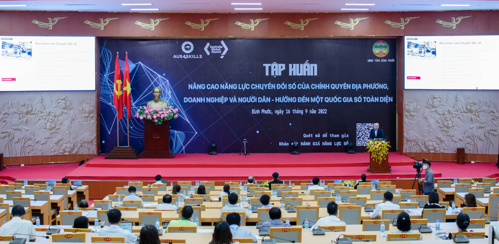

projects

funded projects and research grants (~USD 341,500)
| Year | Research grant | Members | Funding source | Value |
|---|---|---|---|---|
| 2023 | AI Chatbot for supporting staff and patients of the University Medical Center Hospital in Vietnam: An action research project | Duy Dang-Pham, Mai Do, Long Nguyen, Minh Dinh | Tier 2 2024 Thematic Research Grant - RMIT Vietnam | AUD 29,153 (approx. USD 19,500) |
| 2023 | Development of an AI chatbot for recommending foods at a restaurant to reduce food waste and improve customer satisfaction | Duy Dang-Pham | EIP Platform Activity - RMIT University | AUD 3,000 (approx. USD 2,000) |
| 2022 | Investigating Approaches to Digital Transformation Implementation | Duy Dang-Pham, Karlheinz Kautz, Ai-Phuong Hoang, Lukas Parker | Innovation Proof of Concept Funding - RMIT University | AUD 8,960 (approx. USD 6,200) |
| 2022 | Digital Competence for Vietnamese Citizens: Towards an Inclusive Digital Nation | Ngoc Pham, Trung Nguyen, Duy Dang-Pham, Ai-Phuong Hoang, Hiep Pham | D3 Research Activity Fund Scheme - RMIT University | AUD 5,000 (approx. USD 3,500) |
| 2022 | Improving Digital Competence of Local Authorities, Businesses, and Citizens in Dak Nong and Binh Phuoc Provinces: Towards a Digital Nation | Trung Nguyen, Duy Dang-Pham, Ai-Phuong Hoang, Ha Tran | Aus4Skills Australian Alumni Grants Fund Round 4 | VND 232,785,000 (approx. USD 10,150) |
| 2021 | Modeling vaccine-related information to create hybrid information hubs for people with disabilities in Vietnam and Indonesia | Abdul Rohman, Duy Dang-Pham | Vaccine Confidence Fund | USD 221,840 |
| 2020 | Empowering the citizens: toward an inclusive digital nation | Trung Nguyen, Ai-Phuong Hoang, Burkhard Schrage, Long Nguyen Van Thang, Duy Dang-Pham | RMIT Vietnam Thematic Research Grant 2021 | USD 17,660 |
| 2020 | Drivers of the employees’ information security compliance: novel insights from employee engagement and empowerment theories | Duy Dang-Pham, Quang Tran, Ai-Phuong Hoang, Long Nguyen Van Thang | RMIT Vietnam Internal Research Grant Scheme 2020 | USD 8,300 |
| 2020 | The influence of Corporate Social Responsibility Activities on Brand Love and Purchase Intention: The empirical study of emerging brands in Vietnam | Long Nguyen Van Thang, Rajkishore Nayak, Duy Dang-Pham | RMIT Vietnam Internal Research Grant Scheme 2020 | USD 8,500 |
| 2017 | Network Analysis of Research Collaborations between ACIS participants (1990 to 2016) | Karlheinz Kautz, Duy Dang-Pham | Australian Council of Professors and Heads in Information Systems | USD 5,000 |
| 2017 | Understanding end users’ online information behaviours and development of an assessment for online literacy: an empirical study in Vietnam | Mohammadreza (Reza) Akbari, Mathews Nkhoma, Siddhi Pittayachawan, Duy Dang-Pham | RMIT Vietnam Internal Research Grant Scheme 2017 | USD 5,524 |
| 2016 | A Social Network Analysis Approach to Manage Information Risks and Sharing for Supply Chain Performance | Jaime Calberto, Leon Kok Yang Teo, Duy Dang-Pham, Mathews Nkhoma | RMIT Vietnam Internal Research Grant Scheme 2016 | USD 6,995 |
| 2014 | Developing a KPI for measuring client’s satisfaction of construction projects in Vietnam | Siddhi Pittayachawan, Ferry Jie, Duy Dang-Pham | RMIT University Asia Research Cluster Grant | AUD 8,000 |
| 2014 | Organisation’s mobile security behaviours | Mathews Nkhoma, Siddhi Pittayachawan, Duy Dang-Pham | RMIT Vietnam Internal Research Grant Scheme 2014 | USD 9,500 |
| 2013 | User’s perception of online social networks: A Q-methodology approach | Mathews Nkhoma, Duy Dang-Pham, Siddhi Pittayachawan | RMIT Vietnam Research Poster Competition Prize | USD 2,500 |
| 2012 | Information security measures investment by SMEs | Mathews Nkhoma, Duy Dang-Pham | RMIT Vietnam Internal Research Grant Scheme 2012 | USD 8,000 |